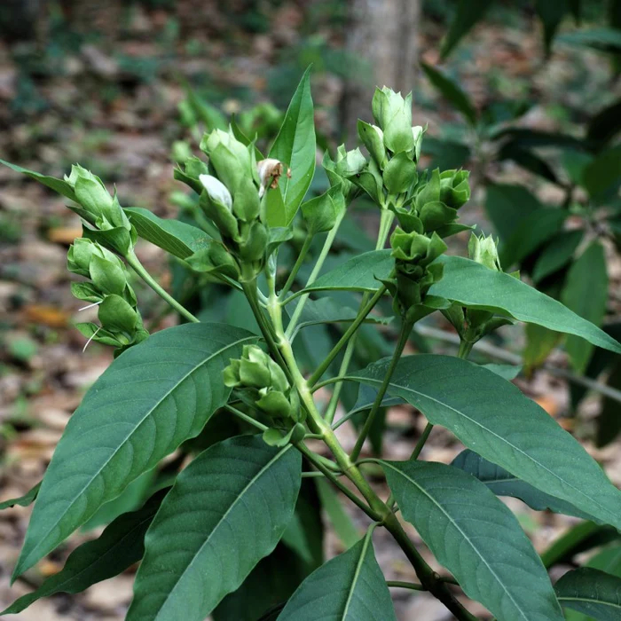

Basonym Of Drug
Vasa
Main Synonym
- Vasica
- Bhishangamata
- Vajidanta
- Aatarusho
- Aatarushaka
- Atarush
- Vruha
- Tamra
- Sinhasya
- Sinhaparna
Regional Name
- Bengali: Basaka, Bakasa
- Gujarati: Aradusi
- Hindi: Adusa, Arusa, Bakasa, Rusha
- Kannada: Aadusoge
- Tamil: Atataute
- Telugu: Ada Saram, Adusaramu
- English: Malabar Nut
- Marathi: Adalusa
- Malayalam: Valiya Aatalotakam
Botanical Name
Adhatoda vasica Ness
Family
Acanthaceae
Classification (Gana)
- Aacharya Charaka: Tikta Skandha
- Aacharya Vagbhata: Durvadi Gana
- Bhavaprakash Nighantu: Guduchyadi Varga
External Morphology
A compact herb
Useful Parts
Important Phytoconstituent
- Vascisine
- Beta-sitosterol
- Tritriacontane
- Vasicinone
- Adhatodine
- Vitamin C
- Vasicinol
- Vasakin
Rasa Panchak
- Rasa: Tikta, Kashaya
- Guna: Laghu, Ruksha
- Virya: Shita
- Vipaka: Katu
Action
Kaphapittahara
Therapeutic Indication
- Kanthya (Good for throat)
- Kandughna (Useful in itching)
- Hradya (Cardio-tonic)
- Kusthaghna (Useful in skin disorders)
- Krimighna (Anti-helminthic)
- Atisarahara (Anti-diarrheal)
- Arshoghna (Anti-haemorrhoidal)
- Grahi (Reduces excessive secretions)
- Pachana (Digestive)
Therapeutic Uses
- Raktapitta - Powder of flower with honey is given in bleeding disorders.
- Rasayana - For rejuvenation, leaves juice with sankha powder or bilva juice is given.
- Atisara - Juice of leaves and flowers is beneficial in diarrhea.
Dose
Leaves Powder: 1-2 gm, Rootbark: 1/2-1 gm, Decoction: 40-80 ml, Leaves Juice: 5-20 ml
Formulations
- Vasa Ghrita
- Vasarista
- Vasakantakari Leha
- Vasa Avaleha
- Vasamooladi Taila
Adverse Effect
Not Known
Remedial Measure
Not required